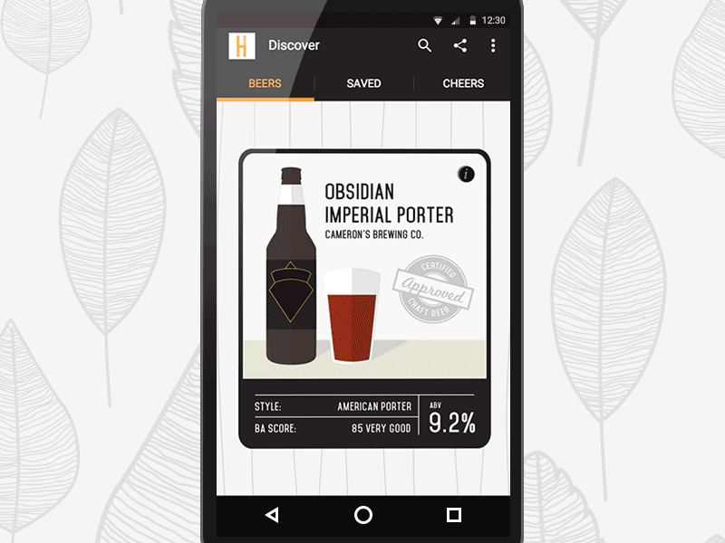
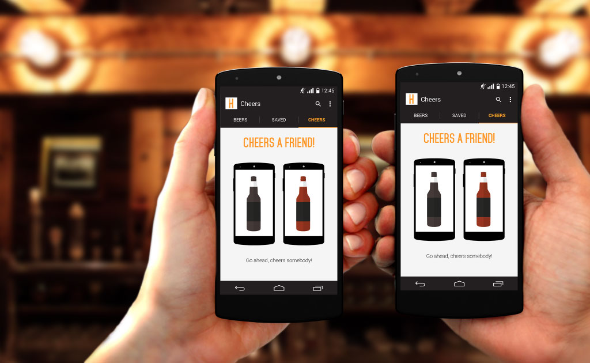

Hops is a Android app concept centered around helping you navigate the dizzying Toronto craft beer scene. We start by determining what's nearby and what you may like, then give you just enough information to choose your next beer. If you can’t decide yet, you can save a few to your list and pick from your choices later — much like an online shopping cart. To keep the app interesting throughout the year we also include visual indicators for seasonal beers, as well as beers that are new to the market.
To facilitate sharing, as well as a way to organically grow the userbase, I came up with the unique interaction of mimicking “cheering” your phones together. You simply tap your phones together like you’re cheersing a couple of beers, and you can find something that matches both of your tastes — incase you want to share a pitcher and save a few bucks.
Link to interactive prototype →
 Credits:
Amy Chiu
Nathan Grimberg
Perrine Brouillet
Back to Work